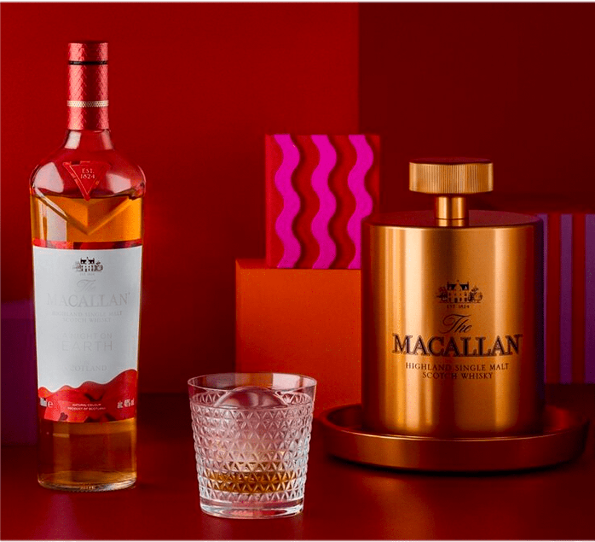
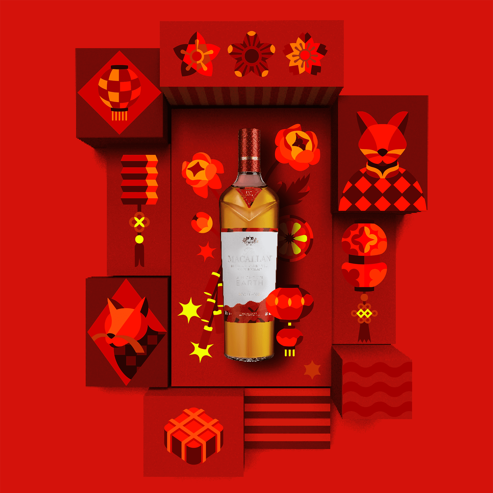

Trao A Night on Earth
thay lời chúc
“Tân Xuân hoan hỉ, tỉ sự cát tường”
Đêm giao thừa mang sức mạnh mãnh liệt của niềm tin và hy vọng, là thời khắc ta trao nhau những lời
chúc
tốt lành nhất để cùng khởi đầu một năm mới. Cùng chung niềm hứng khởi đón Mão tiễn Dần, tặng phẩm A
Night On Earth mang chất vị mạch nha đơn cất được ra đời để biểu trưng cho lời chúc năm mới LỘC phúc
từ
The Macallan, thương hiệu mang tuổi đời hai thế kỷ xứ Speyside.
A Night On Earth,
đêm của “tống cựu nghênh tân,
mong tấn tài, tấn lộc”
Đêm giao thừa vừa là thời khắc hân hoan, thiêng liêng, vừa là thời khắc
hồi hộp, tất bật phải làm sao để mọi sự kịp hoàn tất tốt đẹp, trước khi bầu trời đêm vang lên
tiếng
pháo hoa giòn giã. Vào khoảnh khắc ấy, ta vô thức tin rằng có điều gì vừa đổi thay mới mẻ hơn,
mọi
việc sẽ được ban điềm may để bước vào năm mới. Bởi đêm 30 là đêm dấu mốc của những nỗ lực đã
cống
hiến, những vui buồn đã trải nghiệm, và sau đêm ấy hứa hẹn một hành trình mới - nơi ta gác lại
những
muộn phiền năm cũ, chúc nhau luôn lạc quan, tặng nhau những món quà cầu tấn tài, tấn lộc.
Cùng chia sẻ đêm của dịp cầu chúc tân niên, tặng phẩm A Night On Earth như lời chúc LỘC phúc
suốt năm từ The Macallan.

Gói ghém những nguyên liệu LỘC tinh túy, dưới kỹ nghệ chế tác vô song, A Night On Earth
mang chất mạch nha đơn cất sắc vàng hổ phách tràn năng lượng. Đây còn là màu của sức
sống rực rỡ như Mặt Trời và là màu cát tường, tài lộc của người châu Á. A Night On Earth
The Macallan chính là biểu tượng cho năm mới phú quý, đầy lộc may và tràn hứng khởi.
Dù đón năm mới ở đâu và khi nào, ta vẫn nôn nao và hạnh phúc nhất khi dành những lời chúc lộc phúc
đến người thương, bạn bè hay đôi khi là cho chính mình.
Bên nhau chia hương vị The Macallan A Night On Earth chính là dành cho nhau tinh thần nhiệt huyết và
tràn đầy niềm tin vào năm mới. Vị ngọt mát của cam khô như thêm chút sảng khoái cho năm mới, kẹo dẻo
marshmallow nướng thơm và cả vani, bơ béo ngậy xâm chiếm vị giác như sự hào hứng đón điềm lành và
khởi đầu mới suôn sẻ hơn. Để đến nốt cuối cùng, A Night On Earth mang đến hậu vị bánh quy mới ra lò
càng làm dâng trào cảm giác hưng phấn đón ngày Tết may mắn đầu tiên.
Được kề ly nhau sẻ chia thời khắc quý giá cuối cùng của năm cũ hay giây phút đầu tiên của năm mới,
và cùng tận hưởng A Night On Earth, ta sẽ càng thêm trân trọng tấm lòng và lời chúc tốt lành của
nhau.
Trao A Night On Earth
đêm giao thừa,
cho “quà khai phú quý, LỘC quyền lai”
Trong không khí mong ước điều may, tặng phẩm Tết A Night On Earth từ The Macallan chính là quà
LỘC, tượng trưng cho tục rước hên vào nhà của bao thế hệ người Việt.
Hoà vào trời đêm lung linh pháo hoa, chất vị A Night On Earth mang theo sắc màu sôi động của Lễ
Rước đuốc mừng năm mới tại Scotland, với mong ước xoá tan những điềm không may trong năm cũ và
bừng lên nhiệt huyết, vận may trong năm mới.

Như quà khai Tết LỘC phúc, A Night On Earth còn đong đầy ý nghĩa cầu may gắn liền với ký
ức đón Tết của người Việt. Bộ tặng phẩm A Night On Earth nổi bật với tông đỏ tươi điểm
vàng rực rỡ. Đây chính là sắc Tết Việt, nhất là những ngày 29, 30, dù bận bịu đến mấy,
nhà nhà đều trang hoàng màu đỏ - vàng cát tường, cho năm mới một sức sống mới.
Bộ tặng phẩm A Night On Earth còn lấy cảm hứng từ hình tượng mai vàng bên đào thắm, gợi về những chợ
hoa nườm nượp người nô nức sắm sửa Tết hay những khoảng sân nơi bố mẹ trông ngóng nụ hoa xuân nở cho
kịp xuân mới trọn vẹn lộc may. Cảm hứng thiết kế còn đến từ hình tượng bánh Chưng xanh truyền thống,
được cách điệu để đại diện cho mong ước thịnh vượng, viên mãn, gia đình gắn kết. Đặc biệt là với thế
hệ ông cha ta, bộ tặng phẩm A Night On Earth còn có hình tượng pháo hoa đỏ như còn vang tiếng nổ
giòn tan báo hiệu điềm lành mỗi sáng Mùng 1.
Dưới bầu trời đêm nơi bất cứ đâu cũng háo hức đón chờ năm mới, còn gì bằng sát bên nhau thưởng thức
A Night On Earth, trao nhau những nụ cười hân hoan cho cả năm tươi mới, cái chạm ly vui tai cho tình
thân ấm áp, quà chúc LỘC phúc cho hy vọng trào dâng, hay một cái nắm tay cho yêu thương càng bền
chặt.